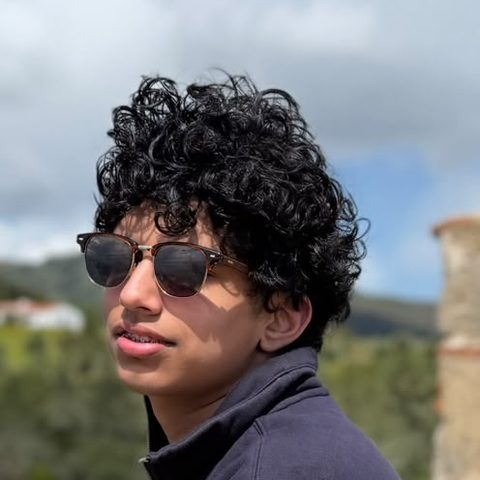
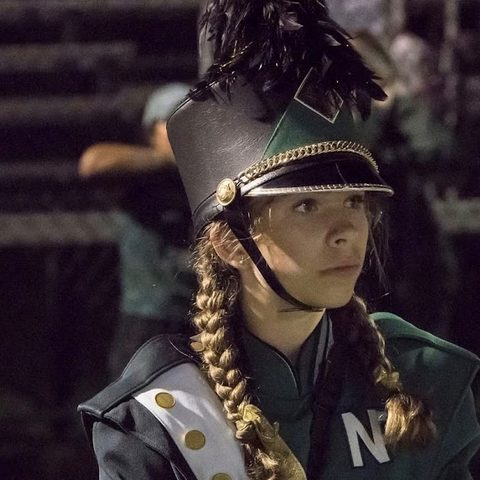
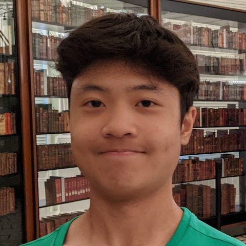

Soham
Director of State Finances
- School
- Montgomery High School
- Beyond YCN
- Parliamentary debate and sabre fencing for school
- Interests
- Reading
Why YCN“Everyone deserves to know what’s going on in the world.”
Meet the team
Every YCN NJ lesson is planned, built and taught by high schoolers. Here are some of the people making it happen.
State Executive Board

Director of State Finances
Why YCN“Everyone deserves to know what’s going on in the world.”
Local Chapter Leaders

Local Chapter Leader · New Providence
Local Chapter Leader · New Providence
Local Chapter Leader · Chatham
Why YCNLooking forward to teaching civics to the Chatham community.

Local Chapter Leader · Ridgewood
Why YCNExcited to get to work!
Local Chapter Leader · Bridgeton
Why YCNExcited to help bring civic education to the youth of South Jersey.
Join us
For high schoolers
Become a Local Chapter Leader and bring YCN to your town. You'll teach our ready-made lessons once a month, and we'll support you the whole way.
LCL interest formFor high schoolers
Research New Jersey policy, teach it, and advocate for stronger civic education with school boards, town councils and lawmakers.
Contact
Parents, teachers, librarians and students: we'd love to hear from you.